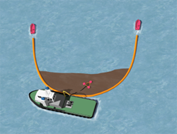
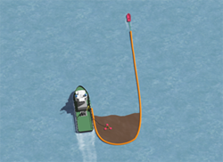
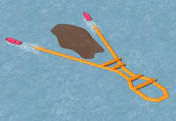

FORMASJONER
Det er viktig at personell som bemanner slepefartøy kjenner fartøyets, og ikke minst, lensens begrensninger i sjøen. I dette kapittel beskrives noen av elementene som må tas hensyn til for å utnytte dette verktøyet på optimal måte.
En tradisjonell lense er i utgangspunktet konstruert for å være en barriere. Normalt vil man benytte lenser til å samle forurensing for deretter å kunne fjerne denne ved hjelp av opptakere. Men lenser benyttes også gjerne som en beskyttelse for å skjerme forurensning fra å treffe land eller annet man ønsker å beskytte.
En lense har et fribord (som gir oppdrift/flyteevne), og et skjørt som, avhengig av lensens bruksområde, har varierende dyptgående.
Ved utsetting og slep av lense er det viktig at slepetau er fortøyd korrekt i lensen for å unngå skade, og at slepefartøyet bruker kreftene fornuftig, ikke pøs på med kraft, trekk lensen ut med et jevnt pådrag
Fartøysfører må være spesielt oppmerksom på at mindre fartøys stabilitet kan endres dramatisk når man sleper. Det er viktig at retningsendringer gjøres med lavt pådrag, og med mindre rorvinkler, ellers kan man risikere at fartøyet kantrer.Lensens konstruksjon vil motarbeide enhver sideveis bevegelse, det er følgelig viktig å kjenne til riktig fremgangsmåte ved retningsendringer (kursendringer). Dette er beskrevet i de påfølgende sider.
Taktiske disposisjoner i forhold til hvor innsatsen skal settes inn, og hvilke enheter som skal benyttes hvor, koordineres av aksjonsledelsen.
Kjenn begrensningene, jobb MED lensen, ikke MOT den.-
U – formasjon
2 fartøy sleper en lense mellom seg. Et tredje fartøy fungerer som opptakerfartøy. Åpning mellom lensearmene bør være ⅓ - ½ gang lensens lengde.
-
J – formasjon
2 fartøy sleper en lense mellom seg hvor det ene fartøyet også opererer som opptakerfartøy.
-
CURRENT BUSTER
Oppsamling og opptaking. Ved store oljemengder må et tredje fartøy operere som opptakerfartøy. Det er også utviklet 1-båt system hvor man bruker boom vane / paravan.